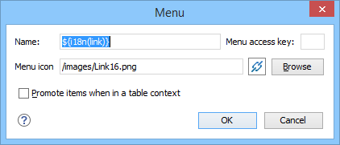

Contextual Menu Subtab
In the Contextual menu subtab you configure what framework-specific action the Content Completion Assistant proposes. The subtab is divided into two sections: Available actions and Current actions.
To open the Contextual Menu subtab, open the Preferences dialog box , go to Document Type Association, use the New, Edit, Duplicate, or Extend button, click on the Author tab, and then the Contextual Menu subtab.

The Available actions section presents a table that displays the actions defined in the Actions subtab, along with their icon, ID, and name. The Current actions section contains the actions that are displayed in the contextual menu for documents that belong to the edited framework.
 Add as sibling
Add as sibling- Adds the selected action or submenu from the Available actions section to the Current actions section as a sibling of the selected action.
 Add as child
Add as child- Adds the selected action or submenu from the Available actions section to the Current actions section as a child of the selected action.
 Edit
Edit-
This option is available for container (submenu) items that are listed in the Current actions section. It opens a configuration dialog box that allows you to edit the selected container (submenu).
Figure 2. Menu Action Configuration Dialog Box The following options are available in this dialog box:
- Name
- Specifies the name of the action. This name is displayed as a tooltip or as a menu
item.Tip: You can use the ${i18n('key')} editor variable to allow for multiple translations of the name.
- Menu access key
- In Windows, you can access menus by holding down Alt and pressing the keyboard key that corresponds to the letter that is underlined in the name of the menu. Then, while still holding down Alt, you can select submenus and menu action the same way by pressing subsequent corresponding keys. You can use this option to specify the letter in the name of the action that can be used to access the action.
- Menu icon
- Allows you to select an image for the icon that Oxygen XML Editor uses for the container (submenu).
- Promote items when in a table context
- If this option is selected, when invoking the contextual menu from within a table, all the actions in this container (submenu) will be promoted to the main level in the contextual menu. Actions and submenus that are not promoted are still available in the Other actions submenu when invoking the contextual menu within a table.
 Remove
Remove- Removes the selected action or submenu from the Current actions section.
 Move
Up
Move
Up- Moves the selected item up in the list.
 Move
Down
Move
Down- Moves the selected item down in the list.